Summary
This experiment investigates seed germination rate. Full factorial of soil temperature, moisture level, seed depth, and light exposure to maximize germination percentage and minimize days to emergence.
The design varies 4 factors: soil temp (C), ranging from 15 to 28, moisture level (%), ranging from 30 to 70, seed depth (mm), ranging from 5 to 25, and light hrs (hrs), ranging from 8 to 16. The goal is to optimize 2 responses: germination pct (%) (maximize) and days to emerge (days) (minimize). Fixed conditions held constant across all runs include seed variety = lettuce, medium = potting_mix.
A full factorial design was used to explore all 16 possible combinations of the 4 factors at two levels. This guarantees that every main effect and interaction can be estimated independently, at the cost of a larger experiment (16 runs).
Quadratic response surface models were fitted to capture potential curvature and factor interactions. The RSM contour plots below visualize how pairs of factors jointly affect each response.
Key Findings
For germination pct, the most influential factors were moisture level (49.9%), seed depth (31.7%), soil temp (12.3%). The best observed value was 87.8 (at soil temp = 28, moisture level = 70, seed depth = 25).
For days to emerge, the most influential factors were moisture level (58.0%), seed depth (26.7%), light hrs (9.7%). The best observed value was 4.8 (at soil temp = 28, moisture level = 70, seed depth = 25).
Recommended Next Steps
- Consider whether any fixed factors should be varied in a future study.
Experimental Setup
Factors
| Factor | Low | High | Unit |
|---|
soil_temp | 15 | 28 | C |
moisture_level | 30 | 70 | % |
seed_depth | 5 | 25 | mm |
light_hrs | 8 | 16 | hrs |
Fixed: seed_variety = lettuce, medium = potting_mix
Responses
| Response | Direction | Unit |
|---|
germination_pct | ↑ maximize | % |
days_to_emerge | ↓ minimize | days |
Configuration
{
"metadata": {
"name": "Seed Germination Rate",
"description": "Full factorial of soil temperature, moisture level, seed depth, and light exposure to maximize germination percentage and minimize days to emergence"
},
"factors": [
{
"name": "soil_temp",
"levels": [
"15",
"28"
],
"type": "continuous",
"unit": "C"
},
{
"name": "moisture_level",
"levels": [
"30",
"70"
],
"type": "continuous",
"unit": "%"
},
{
"name": "seed_depth",
"levels": [
"5",
"25"
],
"type": "continuous",
"unit": "mm"
},
{
"name": "light_hrs",
"levels": [
"8",
"16"
],
"type": "continuous",
"unit": "hrs"
}
],
"fixed_factors": {
"seed_variety": "lettuce",
"medium": "potting_mix"
},
"responses": [
{
"name": "germination_pct",
"optimize": "maximize",
"unit": "%"
},
{
"name": "days_to_emerge",
"optimize": "minimize",
"unit": "days"
}
],
"settings": {
"operation": "full_factorial",
"test_script": "use_cases/99_seed_germination/sim.sh"
}
}
Experimental Matrix
The Full Factorial Design produces 16 runs. Each row is one experiment with specific factor settings.
| Run | soil_temp | moisture_level | seed_depth | light_hrs |
|---|
| 1 | 15 | 70 | 25 | 16 |
| 2 | 28 | 30 | 5 | 16 |
| 3 | 15 | 70 | 5 | 16 |
| 4 | 15 | 70 | 25 | 8 |
| 5 | 28 | 70 | 25 | 8 |
| 6 | 28 | 30 | 25 | 8 |
| 7 | 28 | 70 | 5 | 8 |
| 8 | 28 | 30 | 5 | 8 |
| 9 | 15 | 30 | 5 | 16 |
| 10 | 15 | 30 | 25 | 8 |
| 11 | 28 | 70 | 5 | 16 |
| 12 | 28 | 70 | 25 | 16 |
| 13 | 15 | 70 | 5 | 8 |
| 14 | 28 | 30 | 25 | 16 |
| 15 | 15 | 30 | 5 | 8 |
| 16 | 15 | 30 | 25 | 16 |
Step-by-Step Workflow
1
Preview the design
$ python doe.py info --config use_cases/99_seed_germination/config.json
2
Generate the runner script
$ python doe.py generate --config use_cases/99_seed_germination/config.json \
--output use_cases/99_seed_germination/results/run.sh --seed 42
3
Execute the experiments
$ bash use_cases/99_seed_germination/results/run.sh
4
Analyze results
$ python doe.py analyze --config use_cases/99_seed_germination/config.json
5
Get optimization recommendations
$ python doe.py optimize --config use_cases/99_seed_germination/config.json
6
Generate the HTML report
$ python doe.py report --config use_cases/99_seed_germination/config.json \
--output use_cases/99_seed_germination/results/report.html
Features Exercised
| Feature | Value |
|---|
| Design type | full_factorial |
| Factor types | continuous (all 4) |
| Arg style | double-dash |
| Responses | 2 (germination_pct ↑, days_to_emerge ↓) |
| Total runs | 16 |
Analysis Results
Generated from actual experiment runs using the DOE Helper Tool.
Response: germination_pct
Top factors: moisture_level (49.9%), seed_depth (31.7%), soil_temp (12.3%).
Pareto Chart
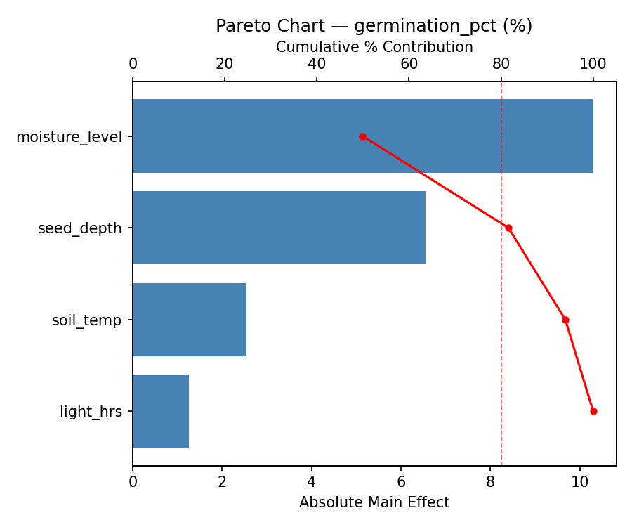
Main Effects Plot
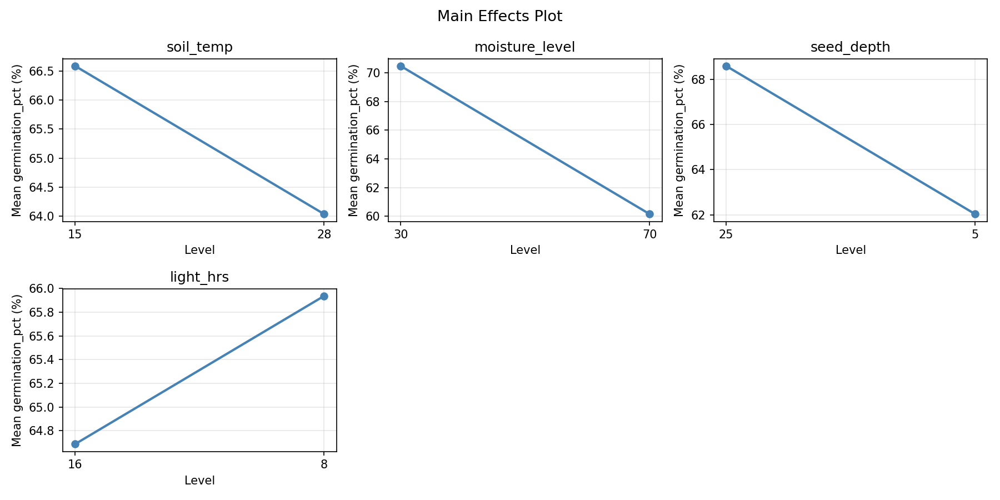
Response: days_to_emerge
Top factors: moisture_level (58.0%), seed_depth (26.7%), light_hrs (9.7%).
Pareto Chart
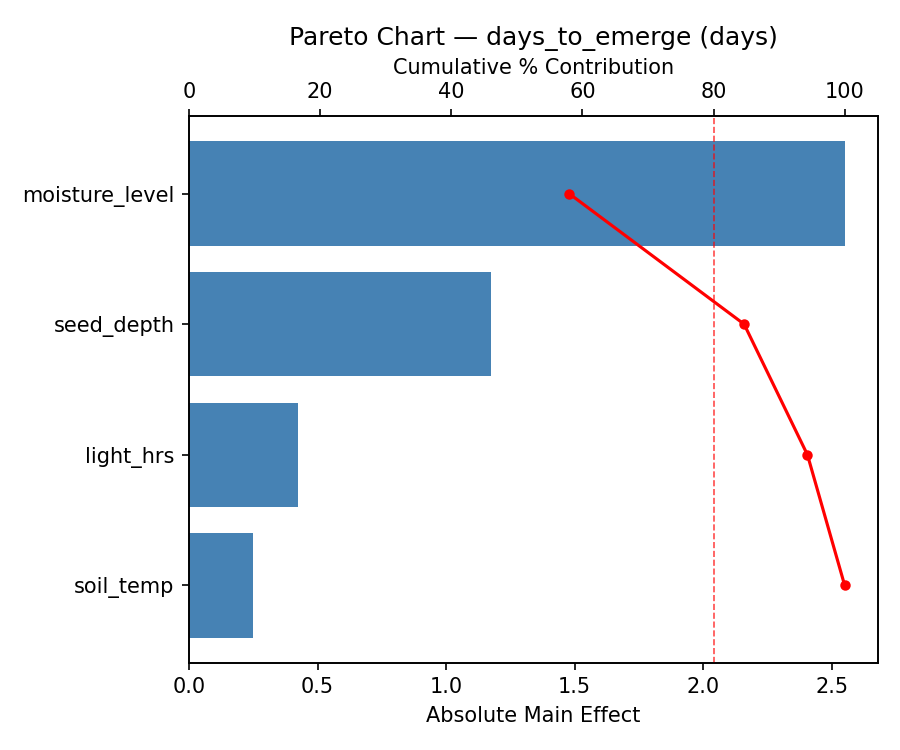
Main Effects Plot
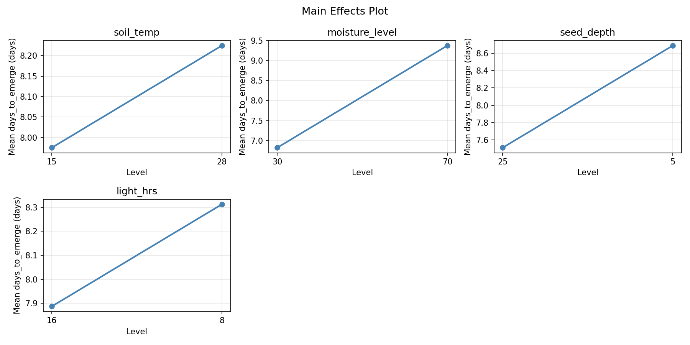
Response Surface Plots
3D surfaces fitted with quadratic RSM. Red dots are observed data points.
days to emerge moisture level vs light hrs
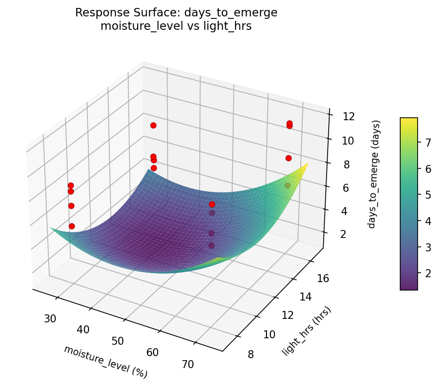
days to emerge moisture level vs seed depth
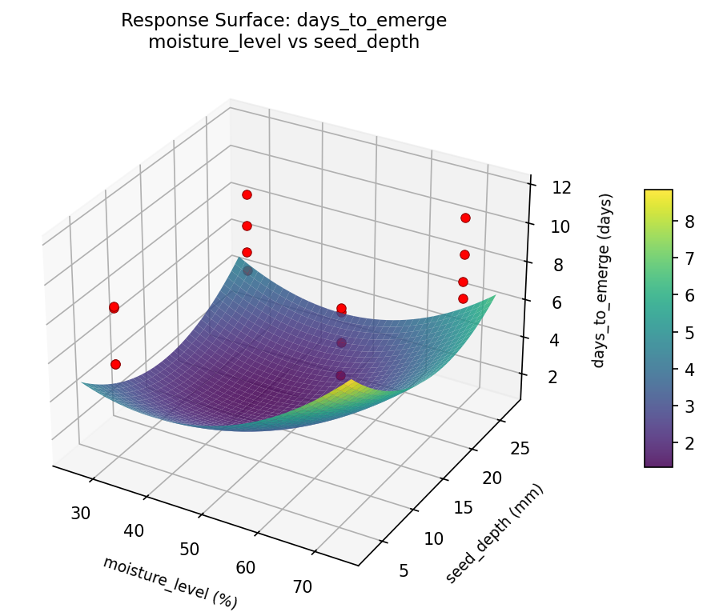
days to emerge seed depth vs light hrs
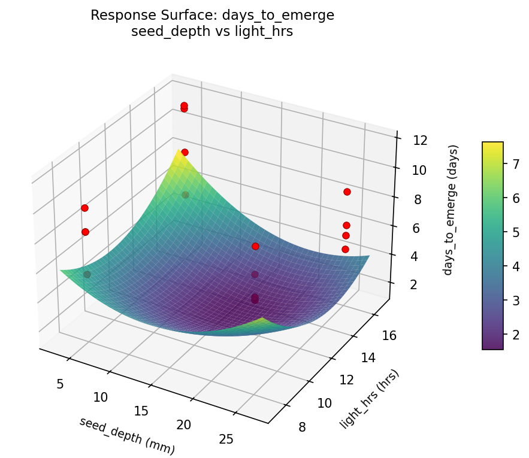
days to emerge soil temp vs light hrs
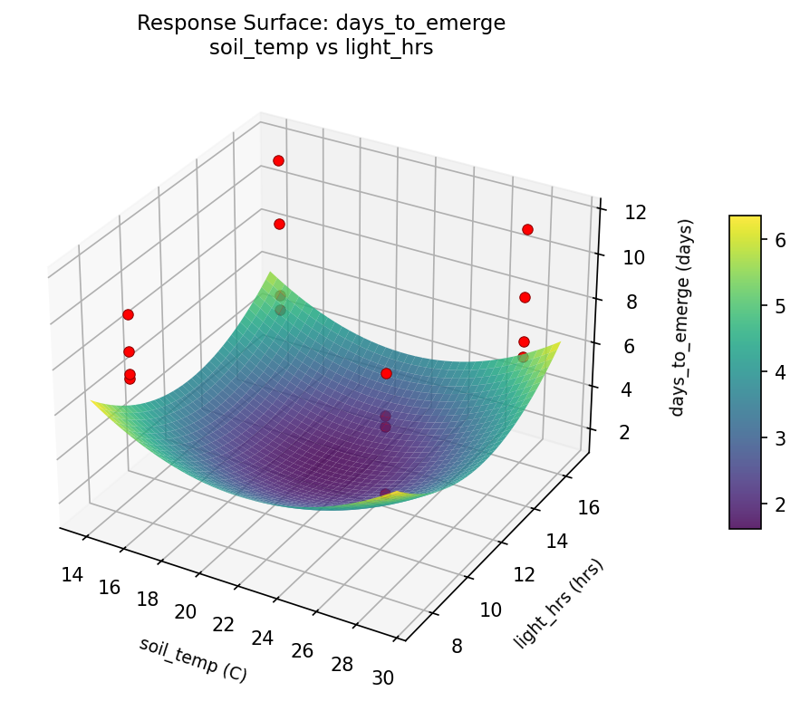
days to emerge soil temp vs moisture level
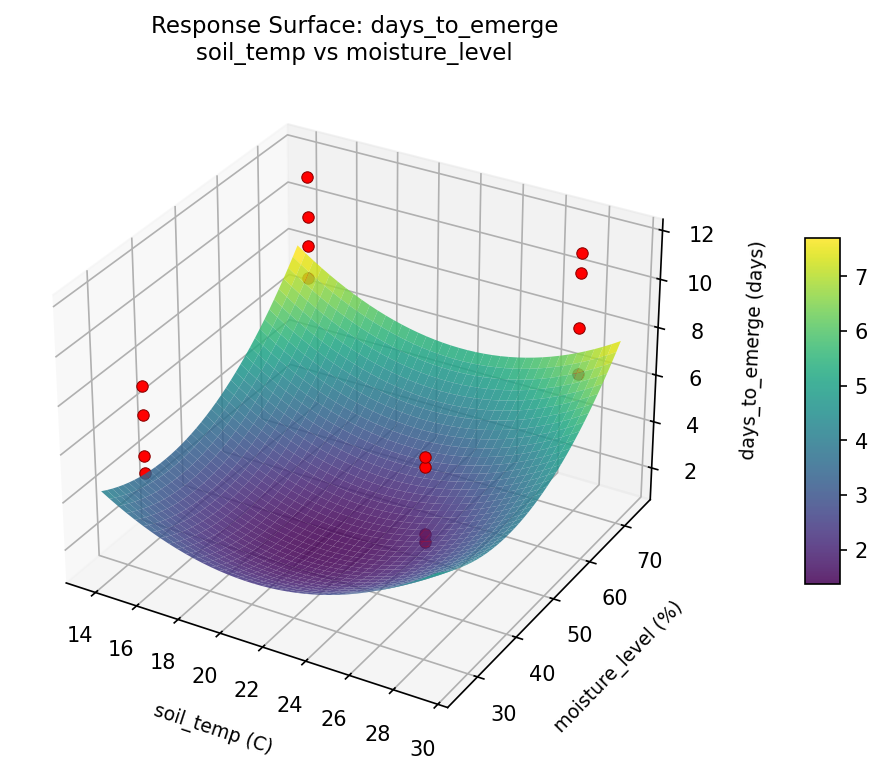
days to emerge soil temp vs seed depth
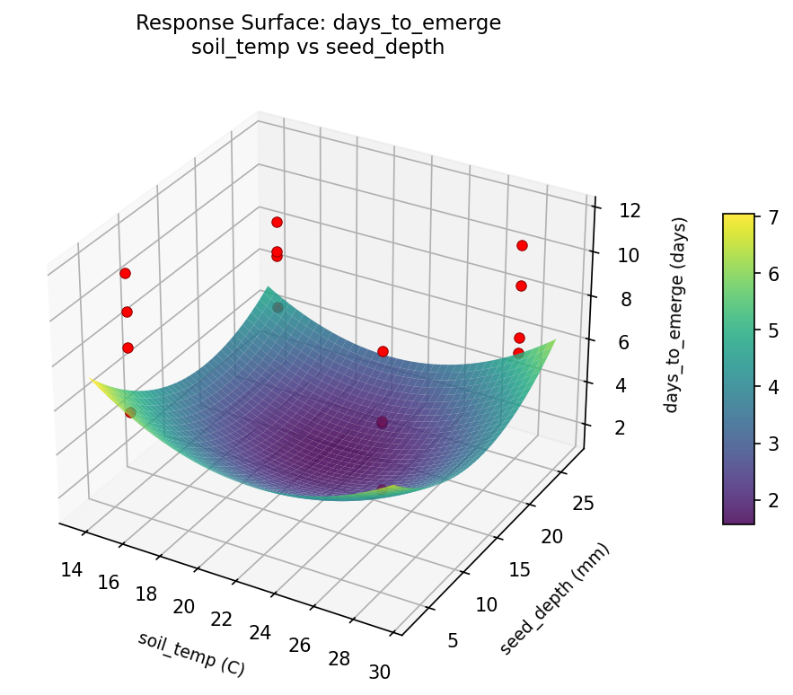
germination pct moisture level vs light hrs
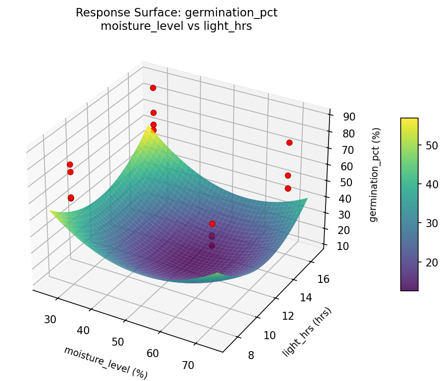
germination pct moisture level vs seed depth
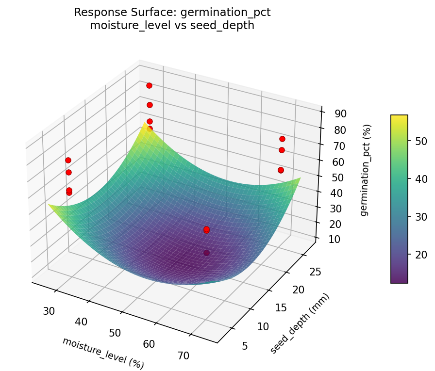
germination pct seed depth vs light hrs
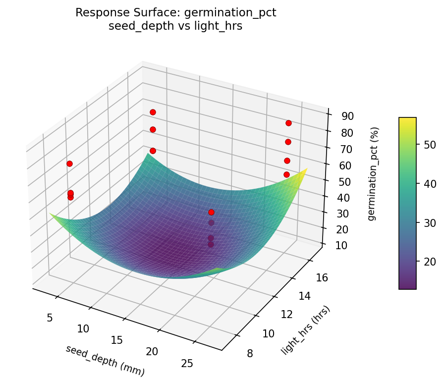
germination pct soil temp vs light hrs
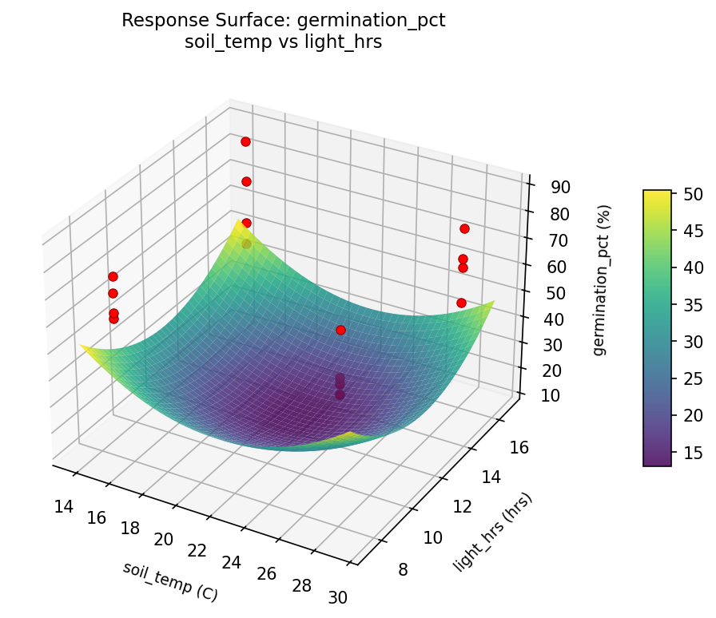
germination pct soil temp vs moisture level
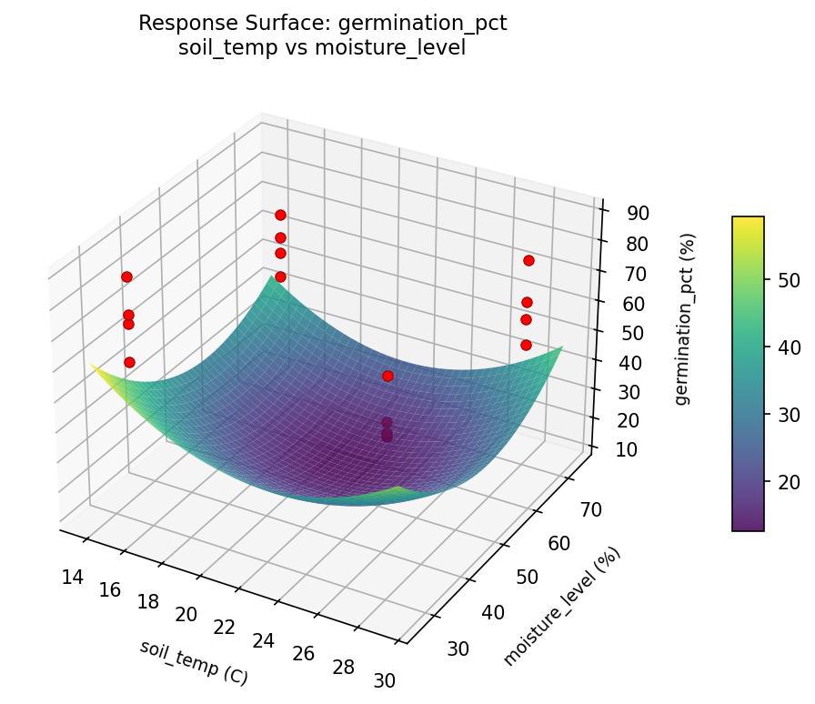
germination pct soil temp vs seed depth
Full Analysis Output
RSM surface: rsm_germination_pct_soil_temp_vs_moisture_level.png
RSM surface: rsm_germination_pct_soil_temp_vs_seed_depth.png
RSM surface: rsm_germination_pct_soil_temp_vs_light_hrs.png
RSM surface: rsm_germination_pct_moisture_level_vs_seed_depth.png
RSM surface: rsm_germination_pct_moisture_level_vs_light_hrs.png
RSM surface: rsm_germination_pct_seed_depth_vs_light_hrs.png
RSM surface: rsm_days_to_emerge_soil_temp_vs_moisture_level.png
RSM surface: rsm_days_to_emerge_soil_temp_vs_seed_depth.png
RSM surface: rsm_days_to_emerge_soil_temp_vs_light_hrs.png
RSM surface: rsm_days_to_emerge_moisture_level_vs_seed_depth.png
RSM surface: rsm_days_to_emerge_moisture_level_vs_light_hrs.png
RSM surface: rsm_days_to_emerge_seed_depth_vs_light_hrs.png
=== Main Effects: germination_pct ===
Factor Effect Std Error % Contribution
--------------------------------------------------------------
moisture_level -10.3000 2.7493 49.9%
seed_depth -6.5500 2.7493 31.7%
soil_temp -2.5500 2.7493 12.3%
light_hrs 1.2500 2.7493 6.1%
=== Interaction Effects: germination_pct ===
Factor A Factor B Interaction % Contribution
------------------------------------------------------------------------
seed_depth light_hrs 7.1250 29.1%
soil_temp seed_depth 5.0250 20.6%
soil_temp moisture_level 4.5750 18.7%
moisture_level light_hrs 4.0250 16.5%
moisture_level seed_depth -2.8750 11.8%
soil_temp light_hrs 0.8250 3.4%
=== Summary Statistics: germination_pct ===
soil_temp:
Level N Mean Std Min Max
------------------------------------------------------------
15 8 66.5875 12.3397 48.5000 87.8000
28 8 64.0375 10.1572 48.5000 80.0000
moisture_level:
Level N Mean Std Min Max
------------------------------------------------------------
30 8 70.4625 10.2113 60.1000 87.8000
70 8 60.1625 9.7086 48.5000 76.5000
seed_depth:
Level N Mean Std Min Max
------------------------------------------------------------
25 8 68.5875 10.9369 56.6000 87.8000
5 8 62.0375 10.7247 48.5000 80.0000
light_hrs:
Level N Mean Std Min Max
------------------------------------------------------------
16 8 64.6875 13.8069 48.5000 87.8000
8 8 65.9375 8.2236 56.9000 80.0000
=== Main Effects: days_to_emerge ===
Factor Effect Std Error % Contribution
--------------------------------------------------------------
moisture_level 2.5500 0.5398 58.0%
seed_depth 1.1750 0.5398 26.7%
light_hrs 0.4250 0.5398 9.7%
soil_temp 0.2500 0.5398 5.7%
=== Interaction Effects: days_to_emerge ===
Factor A Factor B Interaction % Contribution
------------------------------------------------------------------------
seed_depth light_hrs -1.6500 35.1%
moisture_level light_hrs -0.9250 19.7%
moisture_level seed_depth 0.8750 18.6%
soil_temp seed_depth -0.6750 14.4%
soil_temp moisture_level -0.4500 9.6%
soil_temp light_hrs -0.1250 2.7%
=== Summary Statistics: days_to_emerge ===
soil_temp:
Level N Mean Std Min Max
------------------------------------------------------------
15 8 7.9750 2.2670 4.8000 11.7000
28 8 8.2250 2.1940 5.5000 11.5000
moisture_level:
Level N Mean Std Min Max
------------------------------------------------------------
30 8 6.8250 1.6211 4.8000 8.9000
70 8 9.3750 1.9092 6.5000 11.7000
seed_depth:
Level N Mean Std Min Max
------------------------------------------------------------
25 8 7.5125 1.8962 4.8000 10.7000
5 8 8.6875 2.3673 5.5000 11.7000
light_hrs:
Level N Mean Std Min Max
------------------------------------------------------------
16 8 7.8875 2.6809 4.8000 11.7000
8 8 8.3125 1.6427 5.5000 10.7000
Pareto chart (germination_pct): use_cases/99_seed_germination/results/analysis/pareto_germination_pct.png
Pareto chart (days_to_emerge): use_cases/99_seed_germination/results/analysis/pareto_days_to_emerge.png
Main effects (germination_pct): use_cases/99_seed_germination/results/analysis/main_effects_germination_pct.png
Main effects (days_to_emerge): use_cases/99_seed_germination/results/analysis/main_effects_days_to_emerge.png
Optimization Recommendations
=== Optimization: germination_pct ===
Direction: maximize
Best observed run: #11
soil_temp = 28
moisture_level = 70
seed_depth = 25
light_hrs = 8
Value: 87.8
RSM Model (linear, R² = 0.3827, Adj R² = 0.1583):
Coefficients:
intercept +65.3125
soil_temp +1.0250
moisture_level +4.9000
seed_depth +3.5375
light_hrs -2.4125
RSM Model (quadratic, R² = 0.6194, Adj R² = -4.7084):
Coefficients:
intercept +13.0625
soil_temp +1.0250
moisture_level +4.9000
seed_depth +3.5375
light_hrs -2.4125
soil_temp*moisture_level +0.9875
soil_temp*seed_depth +3.1000
soil_temp*light_hrs +1.8500
moisture_level*seed_depth +0.6250
moisture_level*light_hrs +0.5250
seed_depth*light_hrs -3.4875
soil_temp^2 +13.0625
moisture_level^2 +13.0625
seed_depth^2 +13.0625
light_hrs^2 +13.0625
Curvature analysis:
soil_temp coef=+13.0625 convex (has a minimum)
moisture_level coef=+13.0625 convex (has a minimum)
seed_depth coef=+13.0625 convex (has a minimum)
light_hrs coef=+13.0625 convex (has a minimum)
Notable interactions:
seed_depth*light_hrs coef=-3.4875 (antagonistic)
soil_temp*seed_depth coef=+3.1000 (synergistic)
soil_temp*light_hrs coef=+1.8500 (synergistic)
soil_temp*moisture_level coef=+0.9875 (synergistic)
moisture_level*seed_depth coef=+0.6250 (synergistic)
moisture_level*light_hrs coef=+0.5250 (synergistic)
Predicted optimum (from linear model):
soil_temp = 28
moisture_level = 70
seed_depth = 25
light_hrs = 8
Predicted value: 77.1875
Model quality: Weak fit — consider adding center points or using a different design.
Factor importance:
1. moisture_level (effect: 9.8, contribution: 41.3%)
2. seed_depth (effect: -7.1, contribution: 29.8%)
3. light_hrs (effect: 4.8, contribution: 20.3%)
4. soil_temp (effect: 2.1, contribution: 8.6%)
=== Optimization: days_to_emerge ===
Direction: minimize
Best observed run: #11
soil_temp = 28
moisture_level = 70
seed_depth = 25
light_hrs = 8
Value: 4.8
RSM Model (linear, R² = 0.3395, Adj R² = 0.0993):
Coefficients:
intercept +8.1000
soil_temp +0.0125
moisture_level -0.7875
seed_depth -0.8875
light_hrs +0.2750
RSM Model (quadratic, R² = 0.6334, Adj R² = -4.4995):
Coefficients:
intercept +1.6200
soil_temp +0.0125
moisture_level -0.7875
seed_depth -0.8875
light_hrs +0.2750
soil_temp*moisture_level -0.4500
soil_temp*seed_depth -0.3000
soil_temp*light_hrs -0.2625
moisture_level*seed_depth -0.0000
moisture_level*light_hrs -0.5125
seed_depth*light_hrs +0.8125
soil_temp^2 +1.6200
moisture_level^2 +1.6200
seed_depth^2 +1.6200
light_hrs^2 +1.6200
Curvature analysis:
moisture_level coef=+1.6200 convex (has a minimum)
light_hrs coef=+1.6200 convex (has a minimum)
soil_temp coef=+1.6200 convex (has a minimum)
seed_depth coef=+1.6200 convex (has a minimum)
Notable interactions:
seed_depth*light_hrs coef=+0.8125 (synergistic)
moisture_level*light_hrs coef=-0.5125 (antagonistic)
soil_temp*moisture_level coef=-0.4500 (antagonistic)
Predicted optimum (from linear model):
soil_temp = 28
moisture_level = 30
seed_depth = 5
light_hrs = 16
Predicted value: 10.0625
Model quality: Weak fit — consider adding center points or using a different design.
Factor importance:
1. seed_depth (effect: 1.8, contribution: 45.2%)
2. moisture_level (effect: -1.6, contribution: 40.1%)
3. light_hrs (effect: -0.5, contribution: 14.0%)
4. soil_temp (effect: 0.0, contribution: 0.6%)